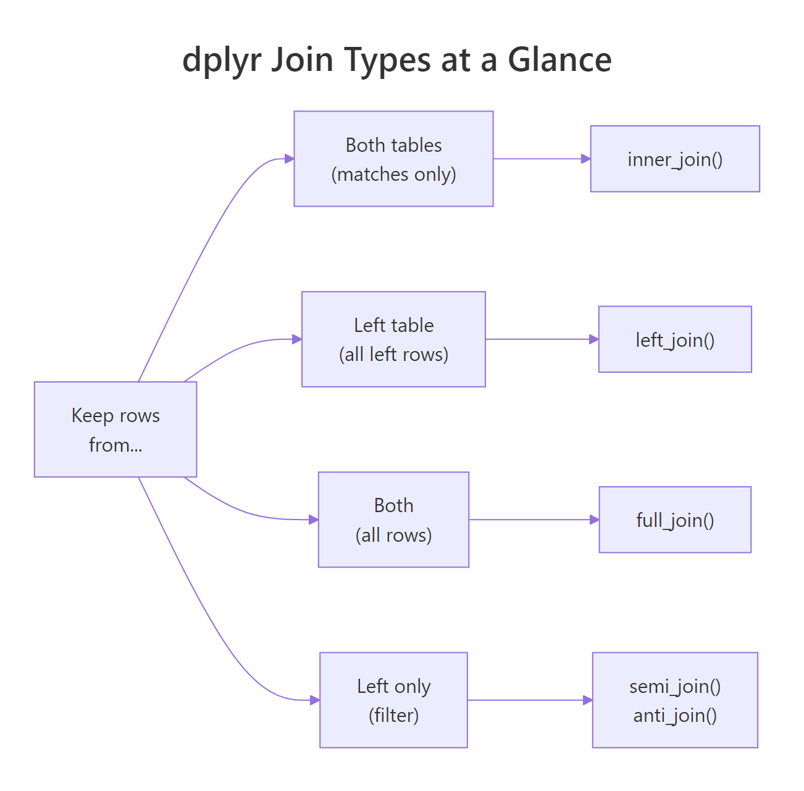
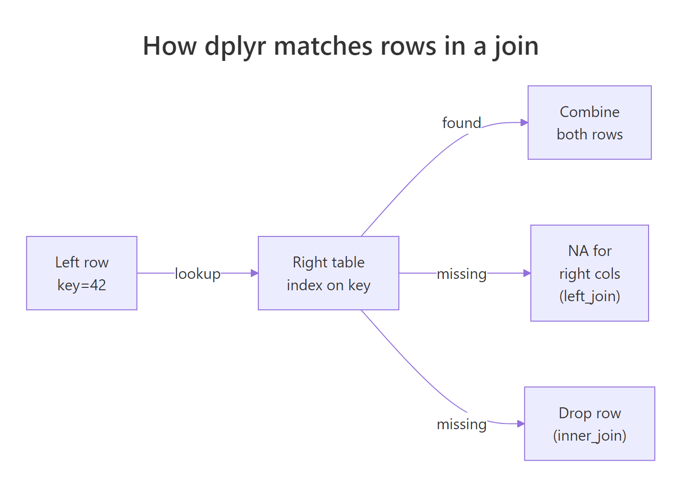

R Joins With Visual Diagrams: Pick the Right Join Every Time
A join combines two tables into one by matching rows on a shared key column — dplyr's six join verbs (inner_join, left_join, right_join, full_join, semi_join, anti_join) differ only in which unmatched rows they keep. Pick the right one and your analysis snaps into place.
What does joining two tables actually do?
Real-world data rarely lives in one table. Customer names sit in one file, orders in another, products in a third — and the only way to answer "what did Alice buy?" is to combine them. A join does exactly that: it takes two tables, finds rows that share a key value, and glues matching rows side-by-side into one wider table. Here's the idea with two tiny tibbles — musicians and the instruments they play:
Two rows survive — John and Paul — because they appear in both tables. George and Ringo are in band but not in instruments, so they're dropped. Keith is in instruments but not in band, so he's dropped too. That "keep only the matches" behavior is what inner_join() does, and it's the strictest of the six joins. The by = "name" argument tells dplyr which column to match on.

Figure 1: Choosing a join comes down to which unmatched rows you want to keep.
Try it: Create two tibbles — one with employee names and departments, one with names and salaries. Join them on name with inner_join(). Save to ex_inner.
Click to reveal solution
Explanation: Carol (in employees only) and Dan (in salaries only) are both dropped because inner_join() keeps only the rows that appear in both tables.
How does inner_join() decide which rows match?
Under the hood, a join is a lookup. For each row in the left table, dplyr takes the key value, scans the right table for rows with the same key, and pastes the matching right-row columns onto the left row. If there's no match, inner_join() drops the left row entirely. If there are multiple matches, it returns one output row per match — so the result can actually be bigger than the left table.

Figure 2: For each left row, dplyr looks up the key in the right table and decides whether to keep or drop.
Three rows out of four survive. Customer 3's purchase is dropped because customer 3 doesn't exist in the customers table. Notice how customer 1 appears twice in the result — once for the Pen and once for the Mug — because Alice made two purchases. That's a key property of joins: one left row can become many output rows if the key has multiple matches.
Try it: Inner-join two small tibbles where one key has 2 matches on the right side. Save to ex_multi.
Click to reveal solution
Explanation: The row with id = 1 from ex_left matches 2 rows on the right, so it's duplicated in the output — each copy paired with one matching right row.
When should you use left_join() vs right_join()?
inner_join() drops unmatched rows, which is sometimes what you want and sometimes a disaster. If you're building a sales report with one row per customer, you don't want customers with zero purchases to silently vanish. left_join() keeps every row from the left table — if the right side has no match, the new columns fill with NA. right_join() does the mirror: keep everything on the right, fill left with NA. In practice, analysts almost always use left_join() and flip their arguments instead of reaching for right_join().
Four rows — every member of band survives. George and Ringo get NA in the plays column because they don't appear in instruments. This is exactly what you want for reports: "show every band member, and their instrument if we know it." The presence of NA is often meaningful in itself — it tells you which left rows lack a match.
left_join() preserves your row count and prevents silent data loss. Reach for inner_join() only when you explicitly want to drop unmatched rows.Try it: Left-join ex_employees with ex_salaries so Carol appears with NA salary. Save to ex_left.
Click to reveal solution
Explanation: Carol appears because she's in the left table; her salary is NA because she's missing from the right table.
How does full_join() keep rows from both sides?
Sometimes you want everything — every row from both tables, with NA wherever one side lacks a match. That's full_join(). It's the union of left and right join: rows that match get combined, rows unique to either side come through unchanged, and unmatched cells fill with NA. Use it when you're merging two partial datasets and need to know what each one contributed.
Five rows — every unique name from either table. John and Paul get combined columns, George and Ringo get NA in plays, and Keith (only in instruments) gets NA in band. The result shows exactly which rows came from which side, making full_join() useful for auditing data sources.
Try it: Full-join ex_employees with ex_salaries. Save to ex_full. Confirm the row count equals the union of unique names from both tables.
Click to reveal solution
Explanation: Four unique names across both tables: Alice, Bob, Carol, Dan. Each appears exactly once, with NA wherever one source lacked the row.
What do semi_join() and anti_join() do?
semi_join() and anti_join() are the odd ones out — they're called "filtering joins" because they don't add columns, they just filter rows. semi_join(x, y) keeps rows in x that have a match in y, but adds no columns from y. anti_join(x, y) is the opposite — it keeps rows in x that have no match in y. Think of them as filter() statements that use another table as the condition.
semi_join() returns John and Paul (the matched rows), but you'll notice the plays column is absent — filtering joins never add columns. anti_join() returns George and Ringo (the unmatched rows). These two verbs together express "rows in X that are/aren't in Y" — a surprisingly common need when you're hunting missing data or checking which records failed a lookup.
orders |> anti_join(customers, by = "customer_id") tells you exactly which orders reference customers that don't exist — invaluable when cleaning up ETL pipelines.Try it: Use anti_join() to find employees with no salary record. Save to ex_missing.
Click to reveal solution
Explanation: anti_join() keeps only rows from the left that have no match on the right. Carol is in ex_employees but absent from ex_salaries, so she's the only result.
How do you join when the key columns have different names?
Real datasets rarely have matching column names. One table calls it customer_id, another calls it cust_id or just id. Pass a named vector to by — by = c("left_col" = "right_col") — and dplyr will match on those differently-named columns. The left name ends up in the result.
The customer_id column on the left matches the id column on the right, and the merged result uses the left name (customer_id). If multiple columns need to match (say, date and region), pass a longer vector: by = c("date", "region") for same-name keys, or by = c("date" = "dt", "region" = "r") for different-name keys.
by argument, a message warns you which columns were auto-matched. Never rely on auto-matching in production code — typos and silent column drift can cause joins on unintended keys. Always specify by explicitly.Try it: Left-join orders with a new tibble shipping keyed on order_id vs ord_id. Save to ex_shipping.
Click to reveal solution
Explanation: The named-vector by tells dplyr which column on each side to match, and the left-side name (order_id) is preserved in the result.
What happens when keys are duplicated on one or both sides?
Here's where joins get tricky. If the left key has one row and the right key has two matches, you get two output rows (as we saw earlier). But what if both sides have duplicates? Then you get a Cartesian explosion — every left duplicate paired with every right duplicate. A 2×3 match produces 6 output rows, and this is almost always a bug.
Six rows from a 2×3 key collision. Since dplyr 1.1.0, you must explicitly declare relationship = "many-to-many" to allow this — otherwise dplyr raises an error, on the grounds that many-to-many joins are usually accidents. The safer relationship types are "one-to-one", "one-to-many", and "many-to-one", each of which dplyr will verify and error on if violated.
relationship on every production join so dplyr catches violations for you.Try it: Try joining left_dup and right_dup with relationship = "one-to-one". What happens? Save the error message (or success) to ex_rel.
Click to reveal solution
Explanation: Both sides have duplicates, so the relationship isn't one-to-one. dplyr raises an error — which is exactly what you want in production code to catch data issues early.
Practice Exercises
Use my_* variables to avoid clobbering earlier tutorial state.
Exercise 1: Customer lifetime value
You have a customers table and an orders table. Compute each customer's total spend (sum of amount over all their orders). Include customers with zero orders (they should show NA or 0). Save to my_ltv.
Click to reveal solution
Explanation: left_join() preserves every customer; sum(..., na.rm = TRUE) handles Carol's missing-orders case by summing nothing to 0.
Exercise 2: Orphan detection
Find orders that reference non-existent customers (an anti_join use case). Save to my_orphans.
Click to reveal solution
Explanation: Orders 3 and 5 reference customer IDs not in cust_v2. anti_join() keeps left rows that don't match on the right — exactly the orphan-finding pattern.
Exercise 3: Join with renamed keys and filter
Join orders with people from earlier (keys are named differently), then keep only rows where the customer name starts with "A". Save to my_a_orders.
Click to reveal solution
Explanation: The named-vector by handles the key-name mismatch, and startsWith() is a base R helper that works neatly inside filter().
Complete Example
Here's a three-table rollup: customers, orders, and products. Question: for each customer, what's the total spent on "premium" products?
Three joins, one filter, one group-summarise. Alice spent 100 on premium products, Carol spent 300, and Bob drops out of the result entirely because he only bought standard items. That's the whole game: chain joins to enrich, filter to scope, group_by+summarise to aggregate.
Summary
| Verb | Keeps rows from... | Adds columns from right? | Typical use |
|---|---|---|---|
inner_join() |
Both sides (matches only) | Yes | Strict "only rows with matches" |
left_join() |
Left side (all rows) | Yes (NA where no match) | Default enrichment pattern |
right_join() |
Right side (all rows) | Yes | Rare — usually flip args + left_join |
full_join() |
Both sides (all unique keys) | Yes (NA where no match) | Union of two partial datasets |
semi_join() |
Left side (matches only) | No | "Which left rows exist in right?" |
anti_join() |
Left side (non-matches only) | No | "Which left rows are missing from right?" |
References
- dplyr reference — Mutating joins (
inner_join,left_join, etc.). Link - dplyr reference — Filtering joins (
semi_join,anti_join). Link - Posit tidyverse blog — dplyr 1.1.0 joins overhaul (
relationshipargument). Link - Wickham, H., & Grolemund, G. — R for Data Science, Chapter 19: Joins. Link
- R documentation — base
merge()function. Link - dplyr two-table verbs vignette. Link
- SQL join types explained (cross-reference for SQL users). Link
Continue Learning
- dplyr filter() and select() — Row and column subsetting, the verbs you'll pair with joins for enrichment pipelines.
- dplyr group_by() and summarise() — Aggregate joined data by category, the natural next step after joining.
- pivot_longer() and pivot_wider() — Reshape data before or after joins when your tables are in different shapes.